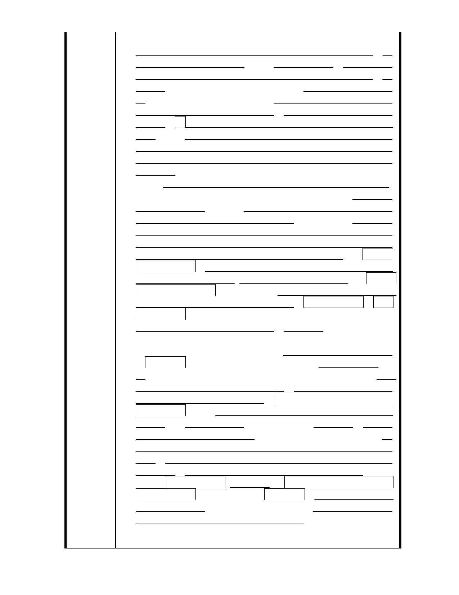

就死慘了！
三. 故宮只要用心在自己那塊 5.7 公頃的文創產業用地就好，不
用擔心外在建築意象如何，只要不綁東綁西的，民間設計的
建築案絕對優於官方設計，甚至比官方更優質更有質感！故
宮外觀設計就有多好嗎？那也不見得，有人認為像是一座道
觀，但這也無傷它的價值！因為故宮它的寶貴在於故宮裡面
價值連城的文物，而非故宮外觀，更不在故宮周邊的樓房高
低如何，不限制故宮周邊樓高，釋放民間充沛的創造力、設
計感，除了提高周邊建築物的建築與設計品質，更能與對面
的文化創意產業園區的→創意、品味、品質、高附加價值、
高產值的調性相呼應！這就是所謂相得益彰、相互輝映、相
輔相成！
四. 再者，故宮連自己文創產業用地要做什麼，要如何規劃利用、
團隊籌組、經營機制、制度設計、人才網羅培訓、營運運作
方略都還沒有譜，甚至，搞不好連最基本的產品線、業種業
態、經營方針都還沒有定案也說不定！遑論其他；反倒是身
為鄰居的我們更擔心文創產業園區是否能規劃建設成功、經
營運作正常，是否會變成另一個蚊子館破壞附近環境，或蓋
出一棟大怪獸出來！破壞附近景觀與天際線美感！那附近房
地產將會大跌！故宮團隊不反思自己，反而如太上皇一般，
抬出限制周邊建築樓高(比總統府博愛特區還嚴格，按博愛特
區已取消樓高管制)的帝王條款，把附近所有鄰居先如戒嚴時
期一般綁死大家！這是極盡不合理的！再次嚴重抗議！拿掉
它、去掉它！
五. 善用民力、分進合擊、眾志成城！民力活潑！公家單位的作
為往往消極、拖拖拉拉、死板沒創意！故宮應善用民力！民
主時代總統都已經民選好幾屆了，故宮不應再心存老大心態
→唯我獨尊！甚至以為只有故宮官員最懂(所謂官大學問
大)，那就大錯特錯了！未來故宮周遭這一區的建築群，只要
故宮不綁東綁西作一些無謂的限制！民間的建築設計絕對優
於故宮及文創產業園區的設計！甚至成為台北市區最有代表
性的建築群之ㄧ！只要容積率足(400%左右)，不要無謂的限
制條款，更不要限制樓高(完全無意義)！那就夠了！讓民間
智慧、創意與力量充分發揮！相信百姓、相信民力！您們看
我們百萬大軍的中小企業、貿易業及百萬台商們，就知道答
案了！要不是政府扯後腿，我們國家的競爭力、群體社會力
會更昂仰！說不定國民平均生產毛額早達 3 萬美元了！再次
強調→只要容積率足(400%左右)，不要無謂的限制條款，更
不要限制樓高(完全無意義)！那就夠了！讓民間智慧、創意
與力量充分發揮！相信百姓、相信民力！故宮及文創產業園
區週邊的景象、意象會更優質、更完美！謝謝！
談劉培森建築師，聽說故宮請的建築師是劉培森，上次台北松山
菸廠大巨蛋和遠雄集團搞得不歡而散，新聞鬧很大，十分令人玩
- 45 -